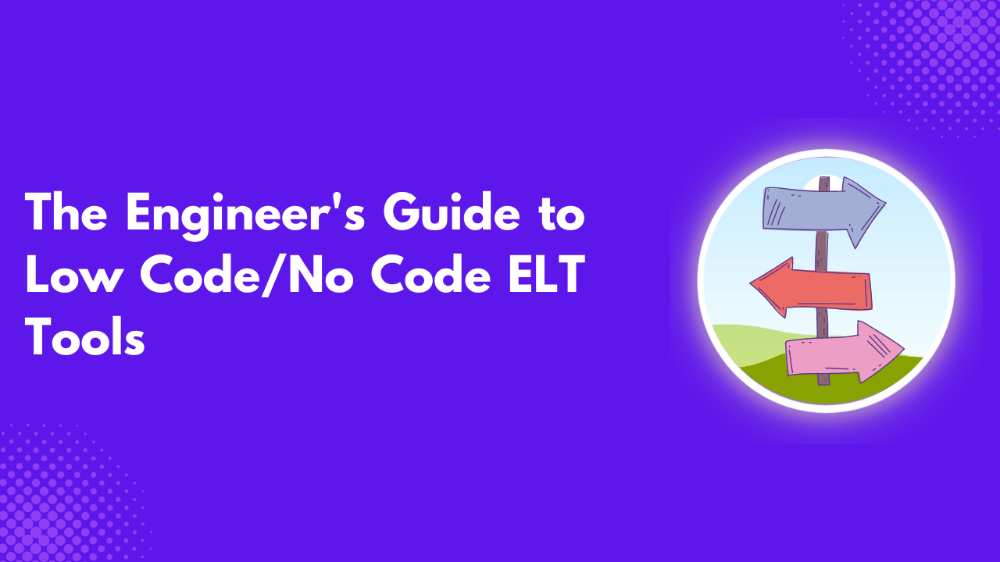
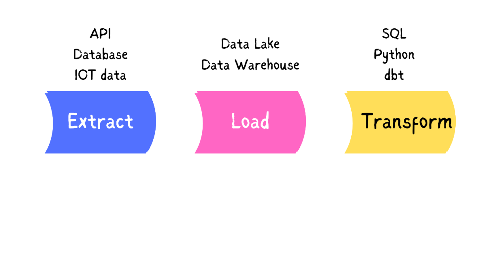
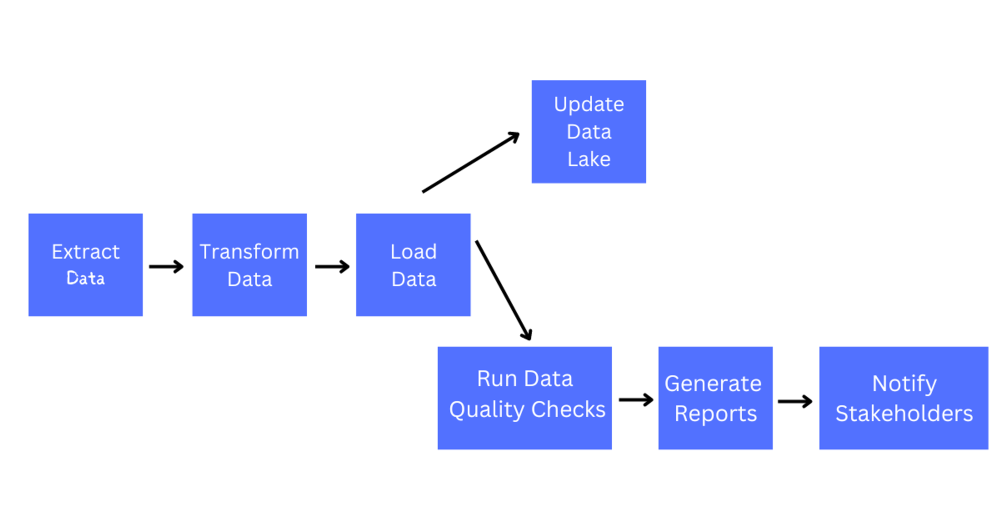
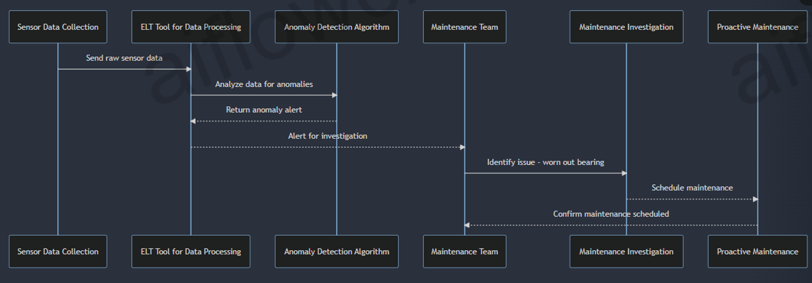
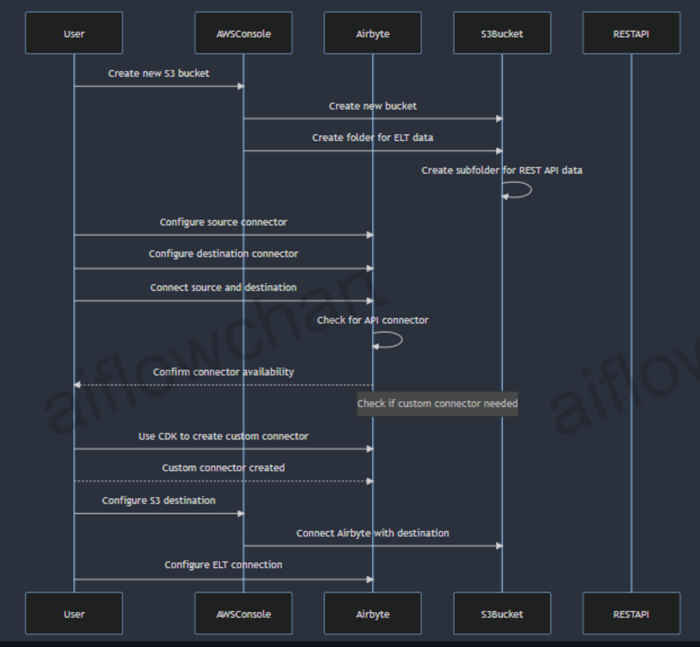

Introduction to Low-code/No-code ELT Tools
Low-code/No-code tools are tools used in building applications using drag-and-drop components, reducing or eliminating the amount of code used in development. It provides an interactive graphical user interface, making it easy for non-technical users to start developing.
Low-code tools help developers quickly get started, writing little or no code. It helps professional developers quickly deliver applications, letting them focus on the business side of the applications. Some features of low-code tools are:
- It offers an interactive user interface with high-level functions, eliminating the need to write complex code.
- It is easy to modify or adapt.
- Mostly developed for a specific use case or audience
- It is easy to scale.
No-code, on the other hand, is a method of developing applications that allows non-technical business users; business analysts, admin officers, small business owners, and others, to build applications without the need to write a single line of code. Some features of no-code tools are:
- Purely visual development, that is, users develop using drag-and-drop interfaces.
- It offers limited customization, users use what is provided in the tool and can’t extend its capabilities.
- Suited for non-technical individuals
- Mostly suited for simple use cases
Low-code tools require some basic coding skills, unlike no-code which does not require any programming knowledge. Low-code/no-code is based on visual programming and automatic code generation. The emergence of low-code/no-code was the fact that domain experts know how difficult it is to impart to the IT team, with the help of low-code/no-code, they can take part in the development process, coupled with the fact that the shortage of skilled developers and loads of workload on the IT professionals is another reason for the emergence of low-code/no-code.
Understanding the ELT Process
ELT stands for Extract, Load and Transform, which are the three stages involved in the process.
It’s a data preprocessing technique that involves moving raw data from a source to a data storage area, either a data lake or a data warehouse. Sources are either social media platforms, streaming platforms or any other place data is stored. During extraction, data is copied in raw form from the source location to a staging area, this is either in a structured or unstructured format from sources such as:
- SQL or NoSQL servers
- Text and document files
- Web pages
Extraction is either full which involves pulling all rows and columns from a particular data source, using an automated partial extraction with update notifications when data is added to the system, or incremental where update records are extracted as data is added into the data source.
Loading involves moving the data from the staging area to the data storage area, either a data lake or a data warehouse. This process is automated, continuous and done in batch. One can load all the available data in the data source to the data storage area, load modified data from the source between certain intervals or load data into the storage area in real time.
In the transform stage, a pre-written schema is run on the data using SQL for analysis. This stage involves filtering, removing duplications, currency conversions, removal of encryptions, joining data into tables or performing calculations.
Unlike in ETL where raw data is transformed before being loaded into a destination source, in ELT the data is loaded into a destination source before it’s transformed for analysis as needed.

By allowing transformation to occur after loading, data is moved quickly to the destination for availability. Because data is transformed after arrival at the destination, ELT allows the data recipient to control data manipulation. This ensures that coding errors when transforming do not affect another stage. ELT uses the powerful big data warehouse and lakes allowing transformation and scalable computation.
Data warehouses use MPP architecture (Massively Parallel Processing), and data lake processes also support the application of schema or transformation models as soon as the data is received, this makes the process flexible, especially for large amounts of data. ELT is suited for data that are in cloud environments, this provides a seamless integration since ELT is cloud-native and allows for the continuous flow of data from sources to storage destinations, hence making them on demand.
ELT is used for instant access to huge volumes of data, for example in IOT, it loads data from IOT devices making it readily available for data scientists or analysts to access raw data and work collaboratively.
Despite its advantages, ELT has some of its limitations:
- Data privacy is a challenge in ELT, this is because when transferring data, a breach can occur from the source to the destination storage which poses security and privacy risks.
- While in transit, if care is not taken sensitive information is exposed, and extra security measures have to be taken to ensure the confidentiality of the data.
- ELT handle large volumes of data, making it computationally intensive, leading to delays in gaining insights.
- Because the data is loaded into the data storage area without transformation, it makes it challenging to transform the data when compared with ETL. This requires strong technical and domain knowledge of the data scientist and analyst who will write the queries transforming the data.
Low-Code/No-Code ELT Tools
Low-code /No-code ELT are used to extract, load and transform data. Here are some of the benefits of using low-code/no-code ELT tools:
- It is easier compared to writing scripts to automate the ELT process.
- It makes development faster, developers can spend more time solving business problems instead of fixing bugs that result from writing lines of code.
- It increases automation, a lot of processes that would have to be set up manually are handled automatically, such as monitoring, logging, setting notifications when there is a problem with the pipeline and so on.
- Most ELT tools support a lot of data connectors, making it easy for an organization to connect to any data source with provisions to create custom connectors.
- ELT tools lower the cost of building an ELT pipeline by ensuring the whole process is conducted with a single tool from start to finish.
- They provide better customer experience, by ensuring that even business folks are involved in building the ELT pipeline.
There are various low-code/no-code ELT tools out there, each with its strengths and limitations, here are some you can consider for building an ELT pipeline:
Airbyte
Airbyte is an open-source data movement platform with over 300+ open-source structured and unstructured data sources. Airbyte is made up of two components; platform and connectors. The platform provides all the services required to configure and run data movement operations while the connectors are the modules that pull data from sources or push data to destinations. Airbyte also has a connector builder, a drag-and-drop interface and a low-code YAML format for building data source connectors.
Airbyte has two plans, Cloud and Enterprise, but it is free to use if you can self-host the open-source version. Airbyte offers real-time and batch data synchronization, tracks the status of data sync jobs, monitors the data pipeline and views logs with a notifications system in case things go wrong. Airbyte also allows you to add custom transformations using dbt.
Fivetran
Fivetran is an automated data movement platform used for ELT. It offers automated data movement, transformations, security and governance with over 400+ no-code source connectors. You can use the function connector in Fivetran to write the cloud function to extract the data from your source, while it takes care of loading and processing the data into your destination. Fivetran gives you options to manage Fivetran connectors, to have more control over your data integration process runs. It offers a “pay-as-you-use” model, with five Free pricing plans, Starter, Standard, Enterprise and Business Critical.
Integrate.io
Formerly known as Xplenty, this is another low-code platform for data movement, unlike the others it doesn’t have many connections, it offers both low-code ETL, Reverse ETL and an ELT platform. Pricing on Integrate.io is based on data volume and increases as the number of rows in your data increases. It offers both Starter, Professional and Enterprise plans, with an extra charge for additional connectors.
Stitch
Stitch is also another data movement platform owned by Qlik. It replicates historical data from your database for free and allows you to add multiple user accounts across your organization to manage and authenticate data sources. It is extensible and has several hundreds of connectors. It offers various pricing models such as standard, advanced and premium which are all charged based on data volume.
Matillion
Matillion is another ELT platform, that uses LLM components to unlock unstructured data and offers custom connectors to build your connectors. It has a complete pushdown architecture supporting SQL, Python, LLMs, Snowflake, Databricks, AWS, Azure and Google. It supports both low-code and no-code for both programmers and business users. You can create an ELT process using either SQL, Python or dbt. It also gives you Auto-Documentation to generate pipeline documentation automatically. It offers three pricing models Basic, Advanced and Enterprise which you can pay only for pipelines run and not, those on development or sampling.
Key Features of low-code/no-code ELT Tools
Availability of Connectors
ELT connectors are components of an ELT tool that allow the tool to connect to a data source and make it possible for extraction and loading. When trying to go for ELT tools it is important to go for the ELT tool with the highest number of connectors, that is why an organization needs to have a list of all the data sources it uses, this will let the organization know the ELT tool to choose based on organizational data sources, most importantly connectors for revenue-generating applications. Let’s say your organization uses Zoho as a CRM. It’s important to compare various ELT tools with a connector for Zoho and see which offers the best service at the most affordable price.
Drag-and-Drop Interfaces
Low-code/no-code ELT tools offer an intuitive user interface with a drag-and-drop functionality, allowing non-technical users to perform ELT by dragging and dropping components without encountering any challenges. This makes the user experience seamless and users can focus on the application’s business logic. This reduces the workload on the IT team, allowing the organization’s domain experts to partake in the development process.
Automated Scheduling
Due to their ability to schedule extracting and loading, automating the ELT process is very simple. This can involve creating tasks that can be run using a specified SQL schema at specific intervals. One can easily automate documentation, document process automation, and show the manipulations occurring to data from source to data storage, enabling organizations to save time and costs.
Data Transformation Capabilities
Low-code/no-code ELT tools manage dependencies when transforming data, this is essential when you have multiple transforms depending on each other. They support the DAG(directed acyclic graph) workflow to manage the transformation dependencies after conducting a transform job using SQL on the data, reading the transformation query and calculating a dependency workflow.
 Another important aspect is their support for incremental loading, where only the differences in data are loaded from source to destination. For example Let’s consider the case of a retail store that tracks its sales data, without an incremental approach the daily sales report would involve extracting sales data from the sales table, which contains millions of records, aggregating the data to calculate the total sales, revenue and units sold for each product, store and day, and load the aggregated data into a new table called sales_daily.
This is a resource-intensive approach as the system needs to process all the sales data every time the report is generated. Using an incremental approach, whenever a new sale is recorded in the sales table, a trigger or a background process is used to update the sales_daily table with new data for that day and store. Whenever every report is generated, only the data for the latest day is extracted from the sales_daily table, which is a much smaller dataset than the entire sales table. The incremental approach helps in improving performance, cost and scalability.
Monitoring and Alerting
Monitoring and Alerting is another important feature of a low-code/no-code ELT tool because It allows you to detect anomalies, bottlenecks and failures in the workflow, provide continuous surveillance and monitor resource utilization. Key important metrics it monitors are; latency, throughput, error rates, resource utilization and pipeline lag. They also give threshold alerts, detect anomalies, and escalate alerts to SMS or phone calls.
Imagine a manufacturing company that collects sensor data from various manufacturing plants across facilities. If analysis, reveals one machine is giving higher vibration levels than others. The ELT tool anomaly detection algorithm should trigger an alert which will prompt the maintenance team to investigate. They might identify a worn-out bearing component and schedule proactive maintenance, preventing equipment failure and uninterrupted production.

Evaluating low-code/no-code ELT Tools
There are various things to consider when choosing a low-code/no-code ELT tool.
- Connectors: When selecting an ELT tool, ensure it supports connections to various data sources and know how many SAAS integrations are available and how effectively the tool can connect to organizational data sources.
- Roadmap: Another important factor, is if the ELT tool can handle the company’s rapidly growing data. Is it responsive and scalable? This will give the organization an idea of the ELT tool’s sustainability in the long run.
- Pricing: How does the ELT tool charge? Is it by data flows or data volume and are the features it offers worth its pricing? Some ELT tools offer more connectors at affordable pricing than others.
- Support: Look for an ELT tool with available customer support, this is very crucial especially when things break. The ELT tools should also offer good documentation that is easy to understand by technical and non-technical users. An online community around the tool is also a plus, users can relate with fellow users and serve as support for each other.
- Security: How does the ELT tool prioritise security? Are organizational data safe and is it regulatory compliant with GDPR, SOC2, HIPPA, and other relevant regulations? These are important security questions to look for when selecting an ELT tool. It is also important that the organization knows, how the tool handles privacy and authentication.
- Ease of use: A low-code/no-code ELT tool that is user-friendly and easy to customize is another priority to look out for, it makes the process of creating ELT pipelines easy and non-technical for business folks.
- Maintenance: When choosing a low-code/no-code ELT tool, it’s important to know how easy it is to fix problematic data sources, and if it gives informative logs if an execution fails. It is also important to know what skills are required, by team members to keep the ELT process running smoothly.
Implementing Low-code/No-code ELT Tools
Planning the ELT Pipeline
Before building an ELT pipeline, you need to get the data from your source using an ELT tool like Airbyte and decide the data warehouse to use, either Google BigQuery, AWS Redshift or Snowflake. Next is to transform the data using dbt, R, Python or a no-code transformation layer such as Boltic, then consider the BI tool for presenting the data to end users.
Configuring Data Source and Destination Connections
Let’s say for example using a REST API as a data source, Airbyte as the ELT tool and Amazon S3 bucks as the data destination. Create a new S3 bucket in the AWS console, in the bucket, create a folder to store data from the ELT operation in Airbyte. Create another folder in the previous folder to store the data you will extract from the REST API.
Next, you will configure both the source and the destination connector, and connect the source and the destination. Ensure any API you use, there is a connector for it on Airbyte. If you don’t see a connector for your data source, use Airbyte’s CDK(Connector Development Kit) to create a custom connector.
Next, you go to AWS S3 to configure the destination connector to connect Airbyte with the destination data lake, after successfully configuring both the source and the destination connector, and passing all the tests. You can now configure the ELT connection between source and destination.

Designing Data Transformation Workflows
Before transforming your data, you need to explore and understand it, this involves looking at your entity relationship diagrams to see how the data relate with each other, identifying missing values or misleading column names and performing a summary analysis of the data.
While exploring, you might understand what is wrong with your data, and decide to perform your transformation process such as correcting misleading columns, renaming fields appropriately, adding business logic or joining data. The transformation you apply depends on what you have explored in the data. You can use tools like dbt, SQL, Python or R to transform your data or go no-code with tools like Boltic. At this stage, test your data to meet business standards.
Finally, you document your transformation process explaining the data model, key fields and metrics making the documentation easy for non-technical users to understand.
Scheduling and Automating ELT Processes
Before releasing the data to end users, you need to push it into a production environment in the data warehouse, these product-ready tables are what the BI analysis will query. With time you will need to update and refresh the data to meet the business needs, using a scheduler or orchestrator. Using the job scheduler, you can use tools like dbt Cloud or Shipyard to create data transformations and tests within a collaborative IDE.
Monitoring and Maintaining the ELT Pipeline
Monitoring is important to identify bugs in data pipelines, optimise pipelines and gain valuable insights. These ELT tools provide visualisations, logging and observability systems to analyse latency, error rates and data throughput in your ELT pipeline. Most low-code/no-code provide all these out of the box, you will receive custom notifications when data problems occur allowing you to improve the quality of your data sets.
Best Practices for low-code/no-code ELT
Ensuring Data Quality and Integrity
- Data quality and requirements: The first step before conducting an ELT is to specify the data quality and requirements. These should specify the data accuracy, completeness, consistency, timeliness, validity, and uniqueness. This also includes details of the sources, end users and data quality metrics. This will help to understand the quality of data to expect and how to achieve it.
- Validation: The next step is to validate the data quality using the ELT tools before loading them into the warehouse, to reduce the amount of bad-quality data that gets into the data warehouse.
- Data quality checks: In this step, ensure you use the ELT tools to implement quality checks on the data in the data warehouse before making it available to end users so that the data is consistent, complete and correct(3Cs).
- Data quality monitoring and auditing: The next step is to monitor and audit the data quality as new data gets updated into the system, this is to resolve issues of data quality when they arise. ELT tools have various tools to get reports, alerts and logs on data quality. This ensures the successful maintenance of the data in the long run.
- Data quality documentation and communication: Next is to give a report explaining to the end users or stakeholders the quality of the data, this report should contain the processes, rules, metrics and issues with the data. Doing this ensures trust and transparency of the data quality.
- Review and update the data quality: Constantly use the information from the ELT tool logging system to update the data quality, from time to time. By doing this, you are ensuring that the data remains relevant and meets the organization’s requirements.
Handling Data Governance and Compliance
It is important to define clear roles and objectives for various stakeholders and use data governance tools to automate the tasks of data validation, cleansing, standardization, profiling, auditing, and reporting. Provide a data catalogue of the data assets and other data quality indicators and recommend a staging area for the source data before moving to the data warehouse. Finally, using a schema-on-read approach allows users to apply different views to the same data, based on their needs.
Integrating low-code/no-code ELT with Existing Systems
Due to the visually driven approach of low-code/no-code ELT tools, you must thoroughly assess your existing data sources, formats and structures to identify potential compatibility issues and develop appropriate mapping strategies. Check, if a connector for your data source exists before building a custom connector.
Scaling and Optimizing ELT Workflows
One of the reasons for scaling and optimizing an ELT process is to reduce data loss and ELT run downtime. The following are ways to optimize an ELT workflow effectively:
- Parallelize Data Flow: Simultaneous data flow saves more time than sequential data flow, you can load a group of unrelated tables from your data source to the data warehouse, by grouping the tables into a batch and running each batch simultaneously, instead of loading the tables one by one.
- Applying data quality checks: You should ensure each data table is tested with predefined checks such as schema-based to ensure that when a test fails, the data is rejected and when it passes, it produces an output.
- Create Generic Pipelines: Generic pipelines ensure team members reuse a code without developing one from scratch. Practices like parameterizing the values can ease the job, when one wants to use a code/pipeline, they change the values of the parameters such as database connections.
- Use of streaming instead of batching: Streaming data from the source to the data destination is the best approach, this ensures the system is up to date whenever new data is added to allow end users access to recent data.
Future of low-code/no-code ELT
Low-code/no-code ELT tools have become popular, offering cloud-based options and reduced infrastructure costs. Most of them now have pre-built connectors covering most data sources and automated scheduling. Advanced low-code/no-code ELT tools now have data mapping and transformation capabilities using machine learning to detect data patterns and transformation. Some low-code/no-code tools now integrate data governance features such as profiling, data lineage tracking and automated data validation rules to ensure data integrity. These innovations aim to simplify data integration and empower non-technical users.
Even with the innovation and simplicity low-code/no-code ELT tool offers, it has some of its limitations:
- Low-code/no-code ELT make it difficult to collaborate as a team, unlike a code-heavy pipeline with version control and collaborative features.
- Some low-code/no-code ELT tools give poor developer experience which can hamper productivity, such as bad and non-intuitive UI design and limited customization options.
- Another challenge with low-code/no-code ELT is the security of the applications built on them, even though the platform is secure. This is an issue since the tool was developed for non-technical individuals with no expertise in security best practices.
- They do not offer the source code to pipelines built and this is a challenge when an organization wants to migrate to another platform, they are forced to develop from scratch on another platform or stick with that same platform.
Conclusion
Why learn data engineering since anyone can now use low-code/no-code tools? Data engineering is not just about building pipelines but also solving business problems such as designing schemas. It’s important that the data you give to your end users can answer their questions. In summary, developing your soft skills is more important to make you stand out.
Low-code/no-code have a lot of abstraction which when things go wrong it’s difficult to find out, some organizations will not want to give out the control they have over their data pipeline by hiding away some of the pipeline core functionality using a low-code/no-code ELT tool.
References
- Unleashing the power of ELT in AWS using Airbyte
- How do you ensure data quality and governance in an ELT process?
- 6 Best Practices to Scale and Optimize Data Pipelines
Need Help with Data? Let’s Make It Simple.
At LearnData.xyz, we’re here to help you solve tough data challenges and make sense of your numbers. Whether you need custom data science solutions or hands-on training to upskill your team, we’ve got your back.
📧 Shoot us an email at admin@learndata.xyz—let’s chat about how we can help you make smarter decisions with your data.